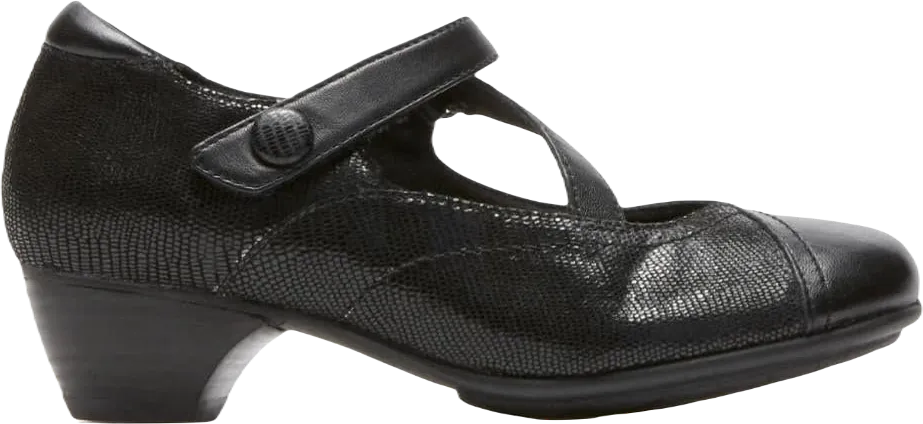

5 Best Shoes for Female Doctors Review 2024
Being a doctor is no easy feat; it requires constant vigilance and activity during long hours on duty. The profession is not only demanding but also presents various challenges. While the physical strain can’t be entirely avoided, wearing the right pair of comfortable shoes can significantly alleviate discomfort. This article is essential reading for professional female doctors seeking footwear that can withstand the rigors of their daily responsibilities in the hospital and ward.
Investing in a quality pair of shoes is crucial for doctors, as it provides the necessary comfort and durability to support them throughout their demanding shifts. A well-chosen shoe can make a substantial difference in managing fatigue and ensuring that healthcare professionals can focus on what matters most—caring for their patients.
-
#1
Aravon Women’s Portia Dress Pump
At the top of the list for female doctors is the Aravon Women’s Portia dress pump, an excellent choice for comfort and durability. This shoe not only provides outstanding comfort for the wearer but is also built to last, making it ideal for the demands of a medical professional. Crafted from genuine leather, it features a stylish snake print design that adds a touch of elegance to a doctor's attire.
The shoe's grip is enhanced by adjustable criss-cross straps, ensuring a secure fit around the foot. With ample cushioning, the insole is made from a combination of gel pads and memory foam, allowing for maximum movement without causing fatigue. This makes it one of the best options for doctors who spend long hours on their feet.
While we couldn't identify any significant drawbacks for this shoe, reviews indicate that it is only available in black. However, this isn't necessarily a major downside, as many female doctors prefer black footwear for its professional appearance and versatility. -
#2
Clarks Women’s Clarks Rosalyn Belle
.webp)
Clarks is a renowned brand known for its leather shoes and handbags, consistently delivering high quality. Although it is an expensive option, the Clarks Women’s Rosalyn Belle Dress Pump stands out as an excellent choice for female doctors seeking both comfort and quality. This shoe's combination of style and comfort makes it hard to beat, ensuring that wearers feel good throughout their demanding workdays.
Crafted from genuine leather, this pump features a rubber sole that provides exceptional grip on various surfaces. This design enhances mobility, making it suitable for the busy environment of a medical professional. However, while the shoe is backed by a reputable brand, there are some drawbacks to consider.
One notable limitation is that the Clarks Rosalyn Belle Dress Pump is only available in black, which may not appeal to everyone. Additionally, finding the perfect size can be challenging, and some reviews suggest that the shoe may lack durability, making it less ideal for those with a tough daily routine. -
#3
Rockport Cobb Hill Women’s Salma CH
.webp)
Next on our list is a remarkable pair of shoes known for their exceptional comfort, even during long hours of work. The Rockport Cobb Hill Women’s Salma CH Dress Pump not only prioritizes comfort but also boasts a stylish design. Crafted from high-quality leather, this shoe features a modest heel that adds elegance without sacrificing stability.
The inner sole is well-cushioned and made from ethylene-vinyl acetate, ensuring maximum comfort throughout the day. Additionally, the shoe's soft sole enhances the overall feel, making it an ideal choice for professionals on their feet for extended periods.
However, the price of this shoe is a significant drawback, as it comes with a higher price tag. This premium quality does come at a cost, but as the saying goes, "good quality comes with a good price." If you're looking for a blend of style and comfort, this shoe is definitely worth considering for its exceptional craftsmanship. -
#4
Soft Walk Women’s Irish
The Soft Walk Women’s Irish dress pump is another excellent addition to our list. This shoe not only prioritizes comfort but is also made of pure leather, which sets it apart from other options. Its synthetic sole provides maximum support and enhances mobility, making it ideal for female doctors who need to be on their feet throughout the day.
Designed to offer excellent support around the ankle, this pair of shoes allows doctors to move easily within the hospital environment. Available in a classic black color, it’s a stylish and functional choice that many will appreciate.
However, a significant drawback of this shoe is its limited size range, making it challenging to find the perfect fit. While the quality and design are commendable, potential buyers should be aware of the sizing issues before making a purchase. -
#5
Clark’s Women Keesha Rosa
Another exceptional and comfortable shoe for female doctors is the CLARK’S WOMEN KEESHA ROSA DRESS PUMP. Known for its quality, Clarks offers this stylish option that combines premium comfort and functionality. This user-friendly shoe is highly regarded as one of the best choices for women in the medical field.
Crafted from leather and available in classic black, this dress pump features a high heel that adds elegance while maintaining practicality. The footbed is made from Ortholite material, providing maximum comfort during long hours on the job. Additionally, the shoe is designed with Cushion Soft technology, further enhancing its comfort level for healthcare professionals.
The outsole is constructed from flexible rubber, ensuring stability for female doctors as they navigate their duties. This combination of style, comfort, and functionality makes the Keesha Rosa Dress Pump a top choice for those looking to balance professional appearance with all-day wearability.